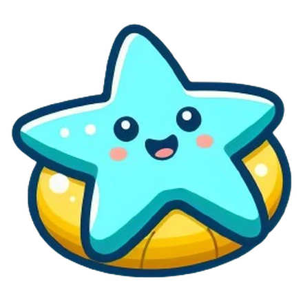
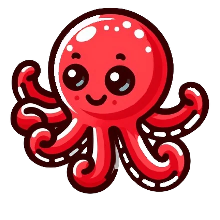
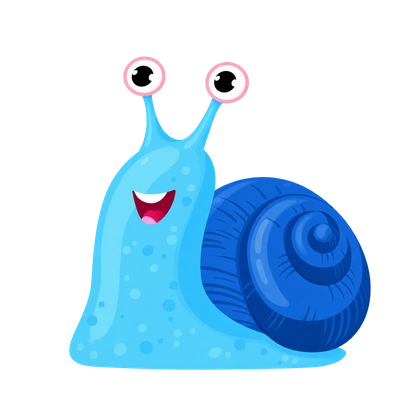
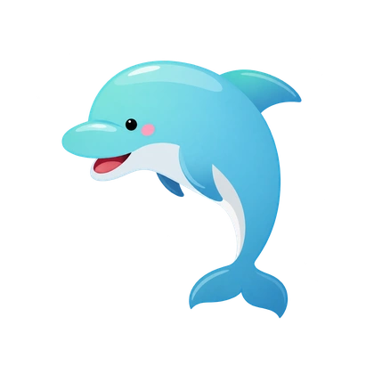
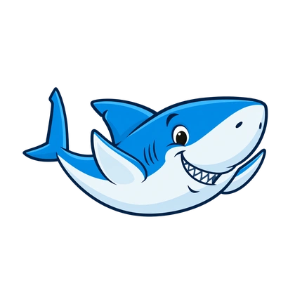
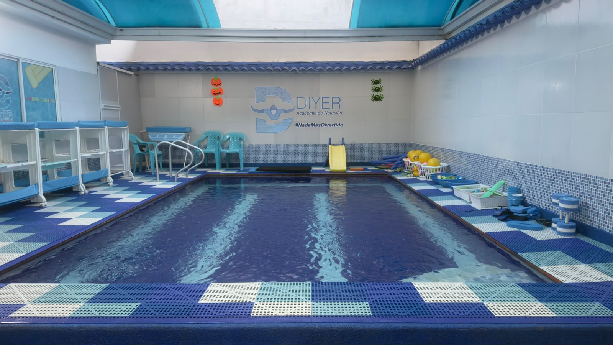
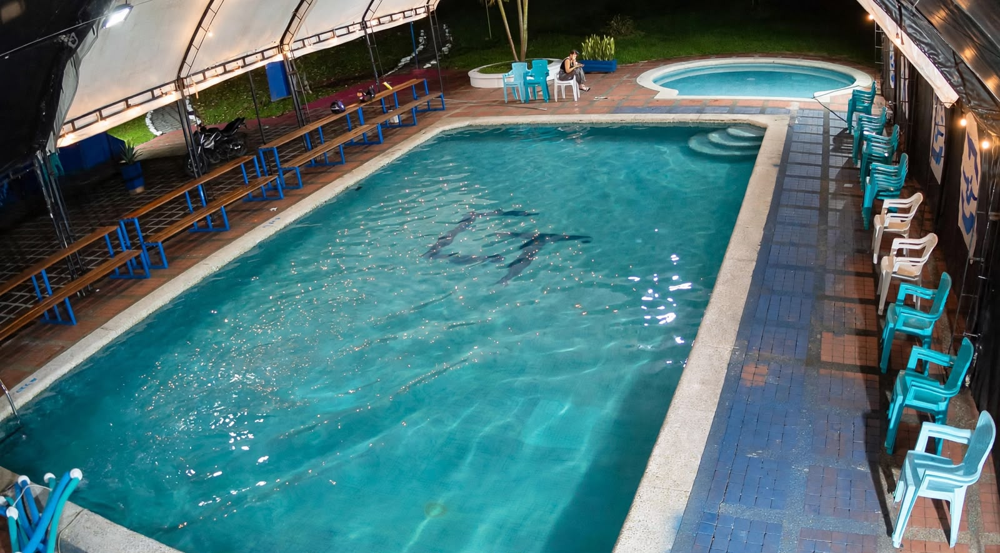

El miedo se trabaja primero
Antes de pedir una brazada trabajamos la entrada al agua, la respiración y la flotación. Un niño tranquilo aprende mucho más rápido que uno asustado, y esa calma se le queda para toda la vida.

#NadaMásDivertido
Matronatación desde los 6 meses, clases para niños, adultos y colegios, y procesos de natación inclusiva. Dos piscinas en Villavicencio, grupos por edad y nivel.
El agua no se domina a los gritos. En Diyer cada clase empieza donde el estudiante se siente seguro y avanza desde ahí: primero el juego, después la técnica. Por eso los grupos son pequeños y las sesiones cortas.
Antes de pedir una brazada trabajamos la entrada al agua, la respiración y la flotación. Un niño tranquilo aprende mucho más rápido que uno asustado, y esa calma se le queda para toda la vida.

Flotar, girar y llegar al borde. Lo primero que enseñamos es lo que salva.
El tiempo exacto en que un niño sostiene la atención sin enfriarse ni aburrirse.
La sede Vanguardia es cubierta y climatizada. En una ciudad donde llueve casi todo el año, eso significa que el proceso no se interrumpe ni se pierden clases pagadas.
Cinco líneas de formación. Si no sabes cuál les corresponde, más abajo hay una guía de dos preguntas.
De Caracoles a Ballenas en la sede El Buque. Comienzan con mamá o papá en el agua y desarrollan adaptación, flotación y autonomía de forma progresiva. Al completar Ballenas, se gradúan y continúan en Vanguardia.
En Vanguardia continúan con Delfín (3 a 5 años), Tiburón (5 a 7 años) y Pingüino (8 años en adelante): respiración, técnica de los estilos y preentrenamiento.
Ver horariosPara quien nunca aprendió y para quien quiere corregir técnica, resistencia o respiración. Sin vergüenza y a tu ritmo.
Empezar de cero
Programas institucionales y grupos familiares, con planificación por curso y reportes de avance.
Cotizar convenioProcesos adaptados para niños con autismo u otras condiciones, con rutinas, anticipación y avance gradual.
Contarnos el casoDiez niveles con edades y objetivos para acompañar cada etapa del aprendizaje.
De Caracoles a Ballenas: adaptación al agua y desarrollo progresivo de la autonomía.

Al completar Ballenas, los niños se gradúan de la sede El Buque y continúan su proceso en la sede Vanguardia, desde el nivel Delfín.
Delfín, Tiburón y Pingüino: técnica de los estilos y preparación para el preentrenamiento.


Dos preguntas y te decimos por dónde empezar. Al final te armamos el mensaje de WhatsApp listo para enviar.
Pregunta 1 de 2
Pregunta 2 de 2
Nuestra recomendación
Enviar este mensajeCada una está pensada para una etapa distinta del proceso.

De Caracoles a Ballenas
Aquí se cursan los siete primeros niveles, de Caracoles a Ballenas, entre los 6 y los 36 meses. Al completar Ballenas, los niños se gradúan y pasan a la sede Vanguardia.

Piscina cubierta y climatizada
Recibe a los graduados de Ballenas para continuar desde Delfín, seguido de Tiburón y Pingüino. Tiene techo, agua climatizada y zona amplia de parqueo.
Historias reales de papás, mamás y estudiantes en nuestras dos sedes.
“Mi hija lloraba con solo ver el agua. Con la paciencia de las profes en El Buque, hoy pide ir a la piscina. El cambio fue impresionante.”
— Mamá de Salomé, 2 años · sede El Buque
“Vivimos cerca de Vanguardia y lo que más valoramos es que la piscina es cubierta. Nunca hemos perdido una clase por el clima.”
— Papá de Juan Esteban, 5 años · sede Vanguardia
“Nunca aprendí de niño y me daba pena. Acá nadie te apura ni te juzga. En unos meses ya nadaba largos completos.”
— Estudiante adulto · sede Vanguardia
“Nos explican en qué nivel va nuestro hijo y qué falta para el siguiente. Se nota que no es solo una clase más, es un proceso.”
— Mamá de Tomás, 6 años · sede Vanguardia
“Buscábamos un lugar con paciencia para nuestro hijo con autismo. Diyer entendió el proceso desde el primer día.”
— Mamá de Andrés, 8 años · sede Vanguardia
* Testimonios de muestra para ilustrar el diseño — reemplázalos por reseñas reales de tus estudiantes antes de publicar.
#NadaMásDivertido
Escríbenos hoy y te contamos en qué sede y horario hay cupo disponible.
Pedir cupo por WhatsAppValores de referencia. El precio final depende de la sede, el programa y cuántas sesiones tomen al mes.
$15.000COP
Para conocer la metodología o tomar una sesión puntual.
Desde$55.000COP
Plan mensual según el número de sesiones y el programa elegido.
A convenir
Colegios, grupos familiares y programas especiales.
Confirma el valor exacto por WhatsApp antes de inscribirte: cambia según sede y nivel.
Desde los 6 meses, en matronatación con acompañante. A partir del año pueden pasar a las clases de niños, según cómo vaya la adaptación.
Vestido de baño, gorro, toalla, sandalias y un cambio de ropa. Para bebés, pañal de agua. Consulta con el profesor cuándo incorporar las gafas según el nivel.
La sede Vanguardia es cubierta y climatizada, así que las clases no se suspenden por lluvia ni por frío.
Entre 30 y 45 minutos según la edad y el nivel. Los más pequeños trabajan 30 minutos, que es lo que sostienen sin enfriarse.
Sí. Tenemos experiencia en procesos de natación inclusiva. Escríbenos antes para contarnos el caso y organizar el horario y el profe adecuados.
Por WhatsApp al 310 873 1095. Te confirmamos disponibilidad según sede, edad y nivel, y agendamos la primera clase.
Cuéntanos la edad, la sede que te queda cerca y el horario que buscas. Respondemos en horario de atención.